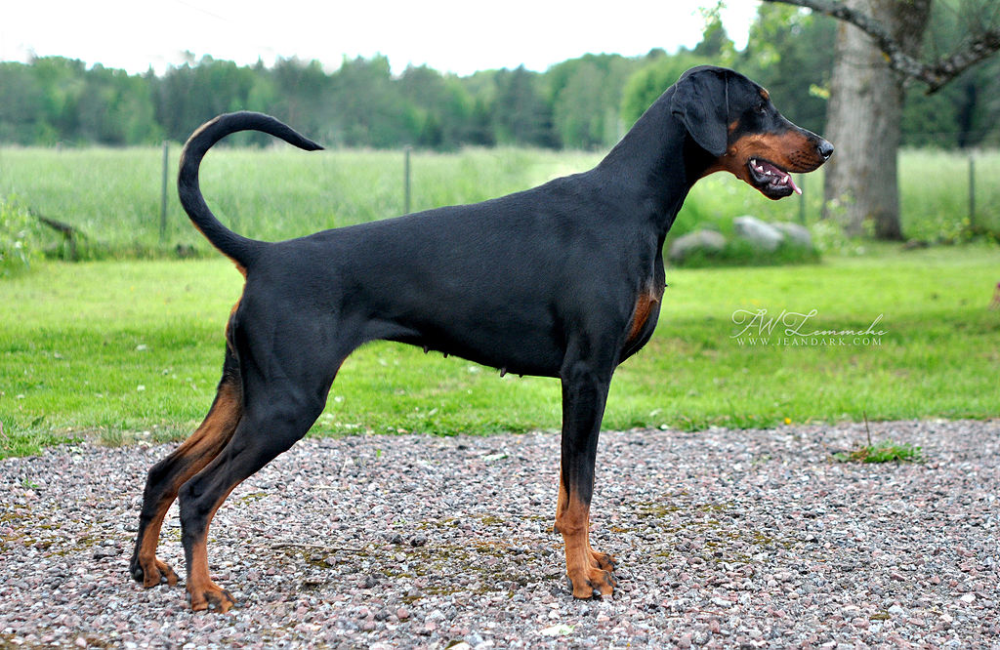

The Dobermann, or Doberman Pinscher in the United States and Canada, is a medium-large breed of domestic dog originally developed around 1890 by Karl Friedrich Louis Dobermann, a tax collector from Germany. The Dobermann has a long muzzle and stands on its toes (not the pads) and is not usually heavy-footed. Ideally, they have an even and graceful gait. Traditionally, the ears are cropped and posted and the tail is docked. However, in some countries it is illegal to do so. Dobermanns have markings on the chest, paws/legs, muzzle, above the eyes, and underneath the tail.
Dobermanns are well known as intelligent, alert and tenaciously loyal companions and guard dogs. Personality varies a great deal between each individual, but if taken care of and trained properly they tend to be loving and devoted companions. The Dobermann is driven, strong and sometimes stubborn. Owning one requires commitment and care, but if trained well, they can be wonderful family dogs. With a consistent approach they can be easy to train and will learn very quickly. If properly trained, they can be excellent with children.
Description
World Breed standards are published by the FEDERATION CYNOLOGIQUE INTERNATIONALE or FCI (World Canine Organisation) on the advice of the IDC (International Dobermann Club) which is the Dobermann breeds governing council and has 36 countries in its member list. To become a world champion, dogs are judged to FCI standards. The AKC has its own standards as do some other countries although most adopt FCI standards as their own. The standard describes that the Dobermann is of medium size, strong and muscularly built. Through the elegant lines of its body, its proud stature, and its expression of determination, it conforms to the ideal dog. The body of the Dobermann should appear to be almost square, particularly in males Despite his substance he shall be elegant and noble, which will be evident in his bodyline. He must be exceptionally suitable as a companion, protection and working dog and also as a family dog
The Dobermann should have a proud, watchful, determined and obedient temperament. The dog was originally intended as a guard dog, so males should have a masculine, muscular, noble appearance. Females are thinner, but should not be spindly. It should also be noted that the American Kennel Club (AKC) breed standard differs from the Fédération Cynologique Internationale (FCI) standards and the US dogs have not evolved in the manner of the European dogs to an often larger and heavier dog leading many to argue that Dobermanns and Doberman Pinschers should eventually be considered and evaluated differently. The Doberman Pinscher temperament is also often considered to be milder and less focused than the Dobermann. This has in turn led to a demand in the US and Canada for imported dogs from European breeders.